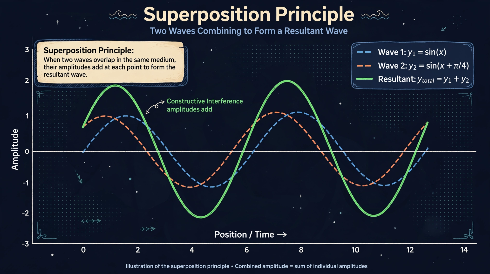

The superposition principle, also known as superposition property, states that, for all linear systems, the net response caused by two or more stimuli is the sum of the responses that would have been caused by each stimulus individually. If input A produces response X and input B produces response Y, then input (A+B) produces response (X+Y).

The principle applies to linear differential equations in physics and engineering: wave superposition in optics and acoustics, electric fields in electrostatics, and quantum superposition in quantum mechanics, where a system can exist in a combination of states described by a wavefunction. Interference patterns, Fourier analysis, and circuit analysis all depend on linearity and superposition.
Superposition fails in nonlinear systems — for example large-amplitude waves, general relativity's nonlinear field equations, and materials whose response saturates. Approximate superposition often holds for small perturbations around an equilibrium.
The idea traces to work on waves and vibrations by Daniel Bernoulli and Leonhard Euler in the 18th century and was formalised with linear algebra and Fourier series in the 19th century.